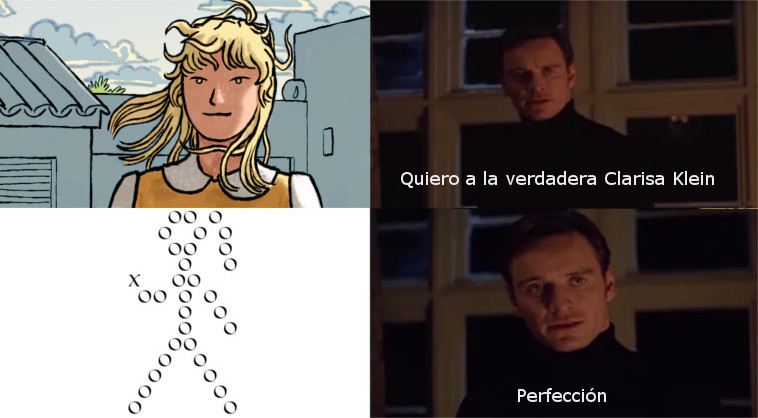

La señorita Clarisa Klein
Ofrezco dos capítulos que tienen una estructura interna (exposición, desarrollo y final) bastante independiente de la novela y creo que son una lectura decente por sí solos.
Cap. 6: Solo Clarisa
Cap. 8: Uso indebido del sarcasmo
